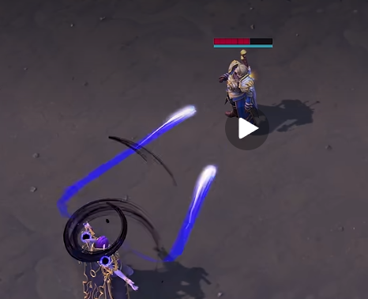

Undine ribbon spell
To review · 2026-10-31 · thr_hxqqxu37vk
Does the bright nib and thin teal tail read as moving ink? Compare Balloon before and after with the reference.
Undine sends Balloon along a bowed stroke, cream at its head and teal at its thinning tail. A short navy brush curl turns around her feet as it leaves. The landing circle, splash and spell timing remain the same.

Both clips use bun run cast undine --steps slot1 --clip: a real pointer and Q press in a staged Overthrow encounter at 1280 × 720. The clip advances two simulation ticks per frame and plays at authored speed. Both casts passed, landed at 0.6 seconds and dealt 80 damage. This proves one cast’s drawing, not a crowded fight or hardware performance.